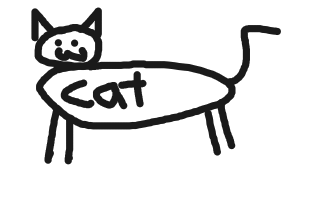

I'm a first-year software engineering student. I got into software engineering due to having easy access to computers, as my dad is a sysadmin. I really liked seeing the limits of what I could do with computers. Since about middle school, I've been writing code. I think I've gotten better at it in that time.
In my free time, I like listening to music, like punk rock and vocaloid. I also play Minecraft (and host servers) and try to contribute to open source software (sometimes involving Minecraft). I'm academically interested in all sorts of science, although I don't spend nearly as much time doing those things as I do writing code. At some point I want to learn blacksmithing probably.
also I like cats.
also also graphic design is my passion. I made this website and am really proud of it. I also drew this cat which I think looks really nice:
